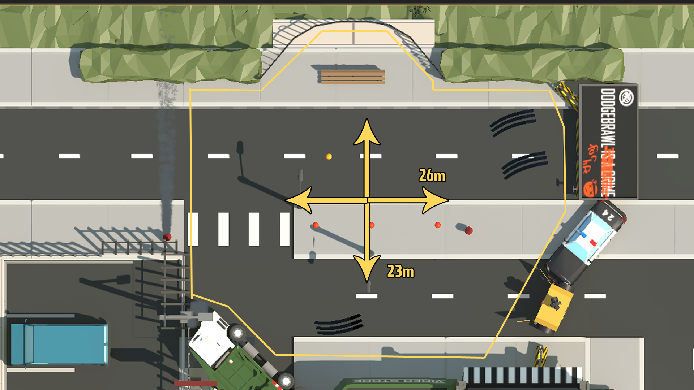
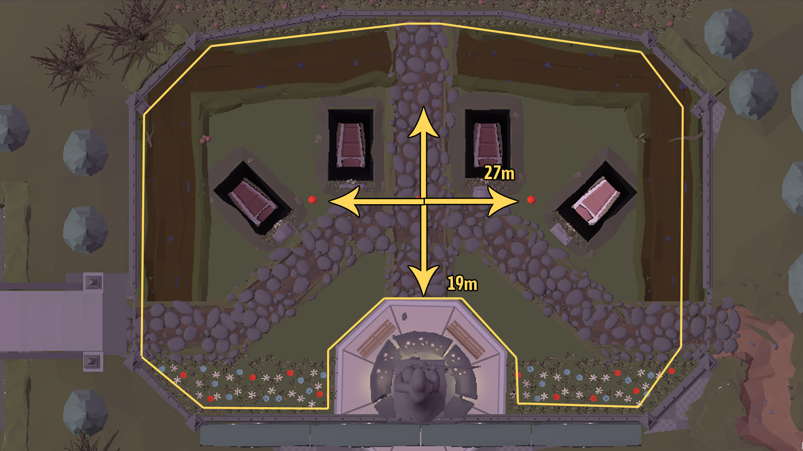

As part of my role in the team, I was involved with implementing the movement mechanics as well as fine tuning them to ensure that the players moved at a sensible rate. The video documents the development of the process at different stages of the game.
In the video you can see that firstly I focused on the speed of the movement before progressing further, we had to find an initial speed we were all satisfied with which would act as the base (neutral) speed for when faster and slower characters were introduced. I then had to ensure that the animations worked in conjunction to the players speed and that there wasn't too much contrast with the syncing. I also noticed an offset by the animation which was fixed later in development.
When tuning the movement, the team discussed creating a minimum and maximum level size. Having the bounds of the levels helped when tweaking the players speed as the distance from one side of the level to the other would remain consistent, making it easier to judge how quickly players could traverse the map. With DodgeBrawl being a frenetic party game, even the slowest player needed to feel like they can cover a fair amount of ground, adding emphasis on the fast gameplay.
My responsibility for scripting and managing the mechanics and actions, was assisted by developing a fundamental player class. With this as a foundation, I was able to create sub-classes that could modify the original variables and adjust player speed based on their stats. In order to test this feature, I made the 'maxSpeed' float variable visible at runtime, allowing us to experiment with different speeds to find a balance that maintained the fast-paced nature of the game.
O'Connor (character) was used in this video as his stats were all fixed at the base levels whereas the other characters inherit the same functions, but feature a wider variety of stats. Please see below the other characters final states.